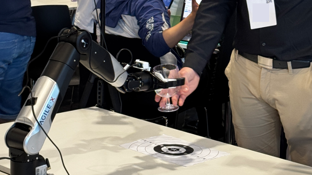

CORSMAL has organised a series of competitions to advance multimodal inference under uncertainty in physical human-robot collaboration, especially during dynamic object transfers. Since 2019, the competitions have been held at international conferences and summer/winter schools, and have attracted over 100 researchers from academia and industry.
Competitions



Audio-visual object classification for human-robot collaboration
22-27 May 2022, Singapore
The CORSMAL Challenge organised at the 2022 IEEE International Conference on Acoustic,
Speech,
and Signal Processing (ICASSP 2022).

Audio-visual object classification for human-robot collaboration
7-10 December 2021, Online
CORSMAL challenge organised within the 2021 Intelligent Sensing Winter School.

Multi-modal fusion and learning for robotics
10-15 January 2021, Milan, Italy
The CORSMAL Challenge organised at the 25th International Conference on Pattern Recognition
(ICPR 2020).

Multi-modal fusion and learning for robotics
1-4 September 2020, Online
The CORSMAL Challenge organised at the 2020 Intelligent Sensing Summer School.
The CORSMAL challenge
2-6 September 2019, London, UK
The CORSMAL challenge organised at the 2019 Intelligent Sensing Summer School.